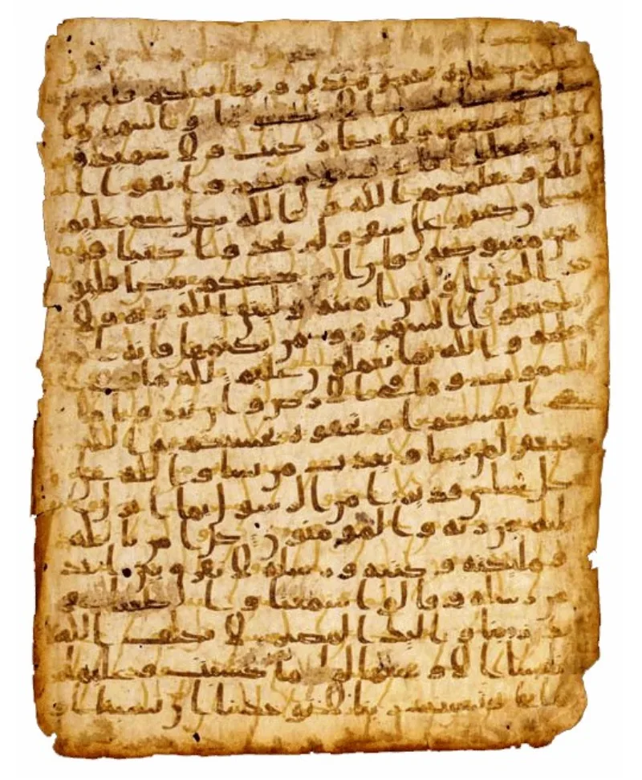
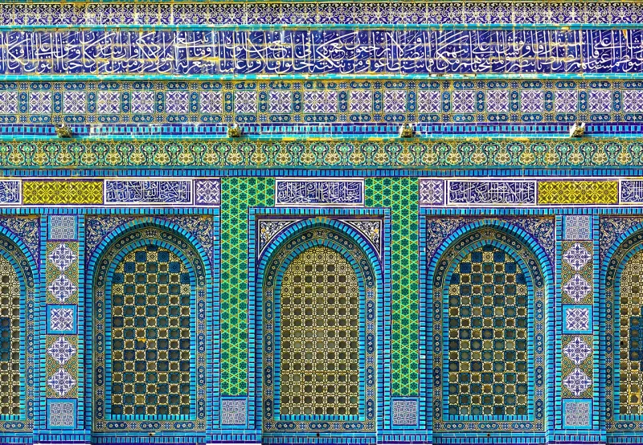

The Muslim answer holds up. Do not lead with this one.
Some said the Quran took shape long after Muhammad. John Wansbrough put it forward in the 1970s.
Patricia Crone and Michael Cook made a like case in Hagarism. Some Christian books still repeat it as if it were fact.
The Birmingham Quran leaf was carbon dated in 2015. The date came out at 568 to 645 AD.
That is a 95.4% chance. It falls in or just after the life of Muhammad.
The Sanaa lower text is 7th century too.
Behnam Sadeghi and Mohsen Goudarzi wrote on Sanaa in 2012. Nicolai Sinai asked in 2014 when the bare text was closed.
He judged it fixed by the middle of the 7th century. The late-date thesis is now dead in the field.
Early is not the same as kept whole. The Uthman case and the lost-verses case still stand.
Both come from Bukhari. Early is not the same as true, either.
Say the Quran was made up long after, and you are fighting the facts. You are also cutting your own rope.
The same tests that date these leaves are the ones that back our Bible. Drop it, and keep the strong cases clean.
"The manuscripts date your text to the seventh century. I am not going to pretend otherwise."


Carbon dating puts a Quran leaf at 568 to 645 AD, within Muhammad's life.
The evidence answered the theory. Carbon dating puts the Birmingham Quran leaf at 568 to 645 AD, with 95.4% confidence. That test dates the animal skin, not the ink. The range falls in or just after the life of Muhammad. The lower text of the Sanaa leaves is 7th century too.
Behnam Sadeghi and Mohsen Goudarzi wrote on Sanaa in 2012. Nicolai Sinai asked in 2014 when the bare consonant text was closed. Scholars now hold that it was largely fixed by the middle of the 7th century. That includes Sinai, Sadeghi, and even those friendly to the revisionists. The late-date thesis is dead in the field.
Do not use this one: the manuscripts are against you, and so is the field.
Weighed fairly, this claim fails. The old copies date the text to the 7th century, and serious scholars across the field accept an early consonant text.
Note what that does not give away. Early is not the same as kept whole. The Uthman case and the lost-verses case still stand, and both sit in Bukhari. Early is not the same as true, either.
But a Christian who says the Quran was made up centuries later is fighting the evidence. He is also cutting his own rope, since the same tests support how the Bible came down to us. It is marked answered to keep the strong arguments clean.